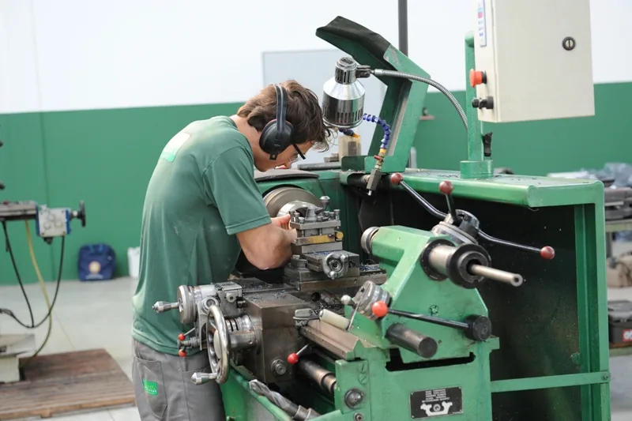
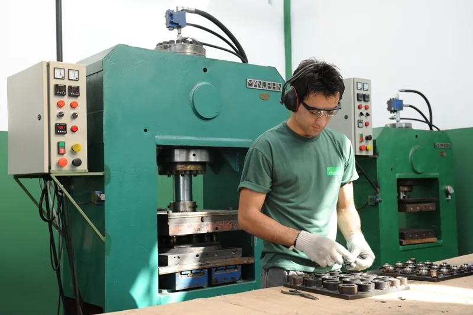
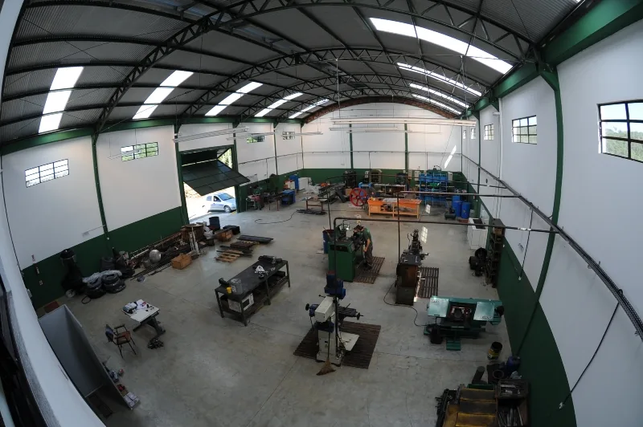
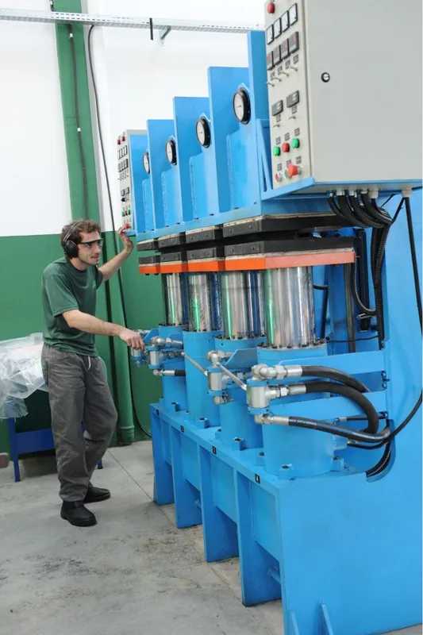
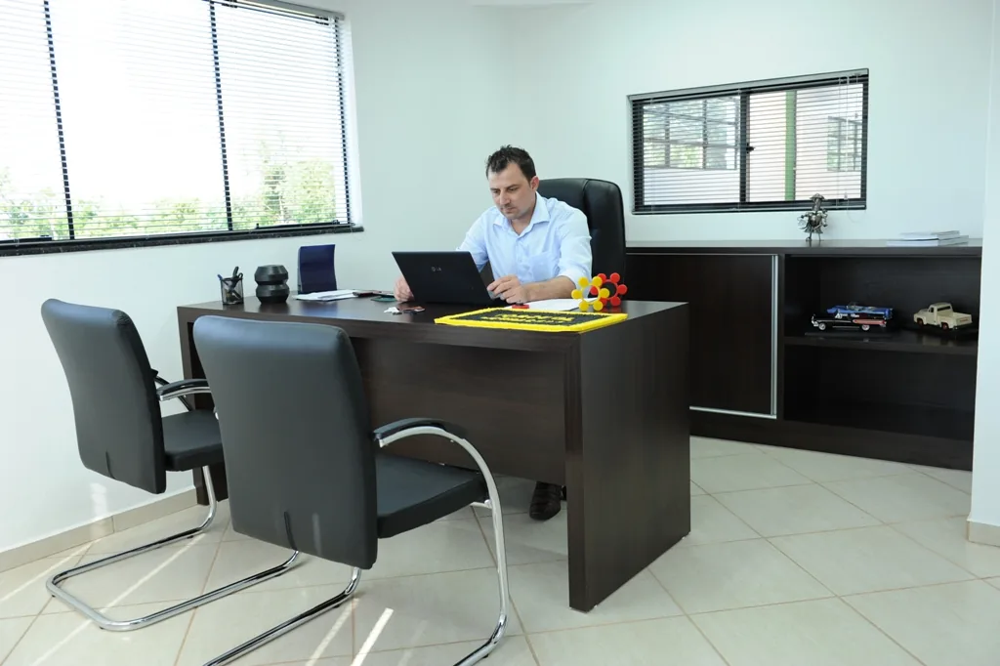
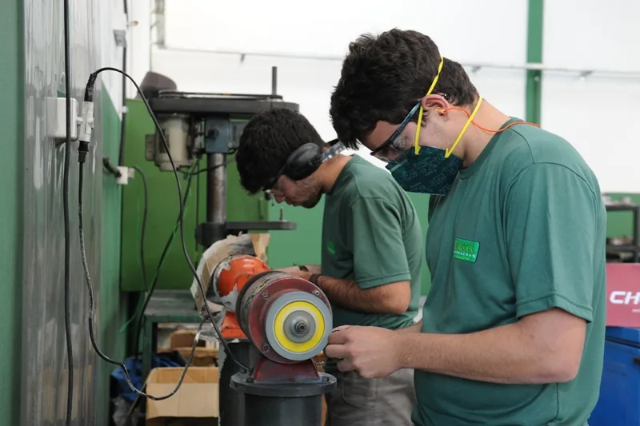

Peças de borracha e poliuretano feitas na medida da sua máquina.
Desde 2004 a Torccol desenha a matriz, vulcaniza e entrega a peça pronta — de Criciúma para indústrias de todo o Brasil.
Tem só o desenho, ou a peça gasta na mão? Serve também.
22 linhas de produto, em cinco famílias.
Do anel de vedação à roda de empilhadeira. Se a sua peça não está aqui, a matriz a gente faz.
Mande o desenho. A matriz a gente faz aqui.
Matrizaria própria significa que ninguém de fora entra no seu prazo. Projeto, ferramenta e produção acontecem na mesma fábrica.
Você envia a referência
Desenho, amostra ou a peça velha, com a aplicação e a quantidade.
Análise técnica
Definimos o composto, a dureza e o processo certos para o uso.
Fabricação da matriz
Usinada na nossa matrizaria, com precisão e sem terceirizar.
Produção e entrega
Vulcanização, rebarbação e controle peça a peça antes de sair.


Qual borracha aguenta a sua aplicação?
Trabalhamos com 10 compostos. Marque o que a peça vai enfrentar e veja quais servem.
A peça vai ter contato com…
Orientação geral. A engenharia da Torccol confirma o composto e a dureza para cada projeto.
Onde as nossas peças trabalham
Nascemos no polo cerâmico e mineral do sul catarinense. Hoje atendemos 11 setores.
- Cerâmico
- Mineração
- Moveleiro
- Automotivo
- Siderúrgico
- Naval
- Alimentício
- Hospitalar
- Construção civil
- Gráfico
- Eletroeletrônico
Seu setor não está na lista? A pergunta que importa é o que a peça enfrenta: carga, óleo, calor, abrasão. Isso a gente resolve.
A fábrica
Sede própria às margens da SC-447, com matrizaria, vulcanização, rebarbação e controle de qualidade sob o mesmo teto.




Nenhuma sobra vai para o lixo.
Rebarbas e retalhos de borracha voltam para a produção e viram produtos para a construção civil. Reaproveitamos 100% do rejeito da fábrica — muito antes de isso virar exigência de fornecedor.
Vamos orçar a sua peça.
Responde mais rápido pelo WhatsApp. Se preferir, ligue ou mande e-mail.
- WhatsApp(48) 3443-3799
- Telefone(48) 3443-3799
- E-mailcontato@torccolborrachas.com.br
- EndereçoRodovia SC 447, 3505 — Criciúma/SC